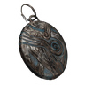
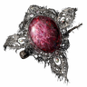
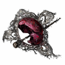
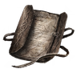

角色專屬遺物詞條
- 本頁依遊戲內遺物篩選的「角色專屬」大類分章，每位渡夜者一章，列出只對該角色生效的全部詞條，包含隨機詞條與固定遺物專屬詞條；大類名稱為本站暫譯，角色名稱取自遊戲文字。
- 詞條名稱取自遊戲的繁體中文與英文文字；「效果數值與規則」欄的說明譯自 Round Table Codex 遺物資料集的社群詳細說明，數字照原文保留；與遊戲參數（版本 1.03.5）不符的說明改依參數撰寫。原文沒有說明的詞條，遊戲參數能以明確的引用關係給出數值時依參數撰寫說明，其餘能取得數值者直接列出數值，否則標示「未載明數值」。「種類」欄列出詞條出現在哪種遺物：一般、深層，或固定遺物的名稱；分級詞條出現在兩種遺物時，每一行都列出該種遺物的等級。「效果數值與規則」欄最後的「相關能力值」連到能力值頁，依遊戲參數列出詞條改變的能力值，包含提升、降低與條件生效；沒有列出不表示沒有關係。「相關武器、法術與戰技」依遊戲參數的標籤或個別 ID，逐一列出與詞條確定有參數關聯的具名武器、法術與戰技，各自連到武器、魔法、禱告或戰技頁的該項目；標籤未核實、來源分歧與未具名的項目不列出。作用與限制仍以詞條說明為準。武器、法術與戰技名稱引用《艾爾登法環》本篇的遊戲文字，尚未確認與《黑夜君臨》一致；部分戰技名稱由本站依本篇官方簡體中文轉寫，詳見戰技頁。圖示取自 Eldenpedia。
 追蹤者
追蹤者
| 詞條 | 效果數值與規則 | 種類 |
|---|---|---|
| 發動能力時，獲得 18 絕活量表累積量。 | 銀色淚滴 | |
| 觸發能力（Sixth Sense）時，獲得 18% 絕活量表累積量。 | 一般 | |
| 技藝（Claw Shot）命中後進行輕攻擊，觸發專屬追加攻擊：為所用大劍附加 12 火屬性傷害增益，持續 20 秒，並造成 [大劍攻擊力 ×1.55] 傷害、16.5 削韌，累積 10 accumuVal。 | 一般 | |
| 未載明數值 |  追蹤者的耳環 | |
| 讓追蹤者可額外儲存 +1 次技藝（Claw Shot）使用次數。 | 一般 | |
| 絕活（Onslaught Stake）改為在地面留下火焰區域，等級 1 時造成 31 火屬性傷害，等級 15 時造成 63 火屬性傷害（隨等級成長的技藝與絕活，從等級 1 至等級 15 線性成長）。 | 一般 | |
| 等級 12-15：集中力 +10、生命力 -5；等級 1：集中力 +1、生命力 -1（等級 1-12 間線性成長）。相關能力值： | 深層 | |
| 等級 12-15：智力 +15、信仰 +15、力氣 -7、靈巧 -5；等級 1：智力 +1、信仰 +1、力氣 -1、靈巧 -1。相關能力值： | 深層 | |
| 技藝（Claw Shot）射出時額外累積 6 accumuVal 與 60 出血累積值，拉回時額外累積 6 accumuVal 與 55 出血累積值。 | 深層 |
 守護者
守護者
| 詞條 | 效果數值與規則 | 種類 |
|---|---|---|
| 能力（Steel Guard）發動期間防禦時，發出近距離衝擊波，造成 100 基礎物理傷害（每次發動冷卻：3 秒）。 | 一般 | |
| 技藝（Whirlwind）改為在中等範圍內持續造成傷害：每次命中造成物理傷害，等級 1 時 13 點、等級 15 時 26 點；並每 0.5 秒造成 0.75 削韌。未蓄力時持續 4 秒，蓄力時持續 7 秒（命中時傷害等級為 2）。 | 一般 | |
| 未載明數值 |  魔女胸針 碎裂的魔女胸針 | |
| 絕活（Wings of Salvation）維持防禦架勢期間，持續為自身與周圍我方人物恢復 [HP 上限 ×0.1 + 12] HP。 | 一般 | |
| 【守護者】以戟蓄力攻擊時，能引發旋風[Guardian] Creates whirlwind when charging halberd attacks | 以戟命中蓄力攻擊時，引發小型旋風，造成物理傷害（等級 1 時 36 點、等級 15 時 71 點）及 5 削韌。 | 一般 |
| 等級 12-15：力氣 +9、靈巧 +19、生命力 -8；等級 1：力氣 +1、靈巧 +2、生命力 -1。相關能力值： | 深層 | |
| 等級 12-15：集中力 +8、信仰 +17、生命力 -6；等級 1：集中力 +1、信仰 +2、生命力 -1。相關能力值： | 深層 | |
| 技藝（Whirlwind）使周圍我方人物受到的所有來源傷害 ×0.82，持續 30 秒。 | 深層 |
 鐵之眼
鐵之眼
| 詞條 | 效果數值與規則 | 種類 |
|---|---|---|
| 讓鐵之眼可額外儲存 +1 次技藝（Marking）使用次數。 | 一般 | |
| 絕活（Single Shot）的箭矢命中時，施加 300 中毒累積值。 | 一般 | |
| 絕活（Single Shot）使自身突刺反擊傷害 ×1.2，持續 30 秒。 | 一般 | |
| 技藝（Marking）造成的弱點顯露時間延長至 22 秒。 | 一般 | |
| 等級 12-15：生命力 +5、力氣 +20、靈巧 -13；等級 1：生命力 +1、力氣 +2、靈巧 -2。相關能力值： | 深層 | |
| 等級 12-15：感應 +15、靈巧 -9；等級 1：感應 +2、靈巧 -1。相關能力值： | 深層 | |
| 技藝（Marking）額外累積 6 accumuVal 與 70 中毒累積值；若目標已中毒，則受到 [250 + HP 上限 ×0.0025] 傷害。 | 深層 |
 女爵
女爵
| 詞條 | 效果數值與規則 | 種類 |
|---|---|---|
| 技藝（Restage）改為重現過去 3 秒內造成的直接傷害、削韌與異常狀態累積值 ×0.6，原為 ×0.5。 | 一般 | |
| 使用絕活（Finale）後的 12.5 秒內，每次打倒敵人時，自身所有來源的傷害 ×1.15，持續 30 秒；每次擊殺的增益以乘算疊加，且各自獨立計時。 | 一般 | |
| 【女爵】短劍連擊的最後攻擊命中時，能對著周圍的敵人，再次上演最近做過的行動[Duchess] Reprise events upon nearby enemies by landing the final blow of a chain attack with dagger | 以短劍命中輕攻擊連擊或雙手各持攻擊連擊的最後一擊時，觸發技藝（Restage），重現過去 3 秒內造成的直接傷害、削韌與異常狀態累積值 ×0.4（會覆蓋最近使用的技藝效果；觸發後若再使用技藝，此效果會被覆蓋）。 | 一般 |
| 【女爵】從背後使出致命一擊後自己的身影會變得難以辨識，並消除腳步聲[Duchess] Become difficult to spot and silence footsteps after landing critical from behind | 使出背刺時，施加隱匿效果：敵人對自身的視覺 ×0.01、聽覺 ×0.00，持續 10 秒。（原文註記：待進一步測試以理解此效果的實際意義） | 一般 |
| 等級 12-15：生命力 +3、力氣 +24、集中力 -14；等級 1：生命力 +1、力氣 +2、集中力 -2。相關能力值： | 深層 | |
| 等級 12-15：集中力 +3、信仰 +13、智力 -5；等級 1：集中力 +1、信仰 +2、智力 -1。相關能力值： | 深層 | |
| 技藝（Restage）給予無敵效果，0.4 秒內不會被命中或受到傷害。 | 深層 |
 無賴
無賴
| 詞條 | 效果數值與規則 | 種類 |
|---|---|---|
| 使用技藝（Retaliate）期間受到攻擊時，自身所有來源的傷害 ×1.1、精力上限 ×1.2，持續 20 秒。 | 一般 | |
| 絕活「圖騰碑石」及其施加的遺物增益持續時間從 20 秒延長至 30 秒，並將對所有非魔法、禱告來源的傷害 ×1.15 增益從 30 秒延長至 45 秒。（原文註記：待核實圖騰碑石持續時間與攻擊力增益持續時間的差異） | 一般 | |
| 使用圖騰碑石時，自身與周圍我方人物獲得增益：在絕活持續期間打倒敵人時，恢復 [HP 上限 ×0.2] HP。（原文註記：待進一步測試與我方人物的互動） | 一般 | |
| 使用圖騰碑石時，自身與周圍我方人物在絕活持續期間受到的削韌 ×0.1。 | 一般 | |
| 等級 12-15：集中力 +9、智力 +35、生命力 -8、耐力 -4；等級 1：集中力 +1、智力 +2、生命力 -1、耐力 -1。相關能力值： | 深層 | |
| 等級 12-15：感應 +17、生命力 -4；等級 1：感應 +2、生命力 -1。相關能力值： | 深層 | |
| 技藝（Retaliate）預設額外累積 12 accumuVal，全力時額外累積 18 accumuVal；並使命中的目標所有來源的傷害 ×0.87，持續 13 秒。 | 深層 |
 復仇者
復仇者
| 詞條 | 效果數值與規則 | 種類 |
|---|---|---|
| 絕活（Immortal March）改為引發靈火爆炸，等級 1 時造成 240 魔力傷害，等級 15 時造成 475 傷害。 | 一般 | |
| 未載明數值 | 老舊袖珍畫 | |
| 絕活（Immortal March）改為對自身造成 [HP 上限 ×0.5] 傷害，並為目標我方人物恢復 [HP 上限 ×1] HP。 | 一般 | |
| 絕活（Immortal March）同時使受影響的我方人物所有來源的傷害 ×1.25，持續 30 秒。 | 一般 | |
| 技藝（Summon Spirit）依當前出現的靈魂給予自身不同的獨特增益：Helen 使自身每 1 秒恢復 1 HP；Fredrick 使自身所有來源的傷害 ×1.1；Sebastian 使自身受到的魔力、火、雷、聖屬性傷害 ×0.8。相關能力值： | 一般 | |
| 等級 12-15：生命力 +5、耐力 +5、集中力 -11；等級 1：生命力 +1、耐力 +1、集中力 -1。相關能力值： | 深層 | |
| 等級 12-15：力氣 +25、信仰 -6；等級 1：力氣 +2、信仰 -1。相關能力值： | 深層 | |
| 能力（Necromancy）觸發時（被動能力：召喚近期被打倒敵人的靈魂），永久提升 FP 上限：1 層為 FP 上限 ×1.0075，最多 60 層時為 FP 上限 ×1.51。相關能力值： | 深層 |
 隱士
隱士
| 詞條 | 效果數值與規則 | 種類 |
|---|---|---|
| 發動絕活時，對自己施加 9999 出血累積值，造成 [HP 上限 ×0.2] 傷害，之後所有來源的傷害 ×1.16，持續 30 秒。 | 似骨石 | |
| 絕活（Soulblood Song）對自身施加 9999 出血累積值，造成 [HP 上限 ×0.2] 傷害，並使自身所有來源的傷害 ×1.16，持續 30 秒。 | 一般 | |
| 絕活（Soulblood Song）使自身 HP 上限 ×1.5。30 秒後，受到傷害時會失去此增益。 | 一般 | |
| 以技藝（Magic Cocktail）收集屬性痕時，生成持續 30 秒的「魔法之境」，使範圍內目標所有來源的魔力傷害 ×1.15；離開範圍後效果殘留 1.5 秒（每次發動冷卻：30 秒）。 | 一般 | |
| 等級 12-15：生命力 +4、耐力 +5、靈巧 +20、智力 -10、信仰 -10；等級 1：生命力 +1、耐力 +1、靈巧 +2、智力 -1、信仰 -1。相關能力值： | 深層 | |
| 等級 12-15：智力 +12、信仰 +12、集中力 -13；等級 1：智力 +2、信仰 +2、集中力 -2。相關能力值： | 深層 | |
| 以技藝（Magic Cocktail）收集屬性時，自身獲得所吸收對應屬性的減傷率 ×0.8 增益，持續 30 秒。 | 深層 |
 執行者
執行者
| 詞條 | 效果數值與規則 | 種類 |
|---|---|---|
| 裝備技藝（Suncatcher）期間，自身所有來源的傷害 ×1.35，持續 6 秒；以該技藝命中攻擊時，自身受到的所有來源傷害 ×1.4，持續 5 秒。 | 一般 | |
| 技藝（Suncatcher）發動期間，妖刀進入解放狀態時，恢復 [HP 上限 ×0.05 + 100] HP。 | 一般 | |
| 絕活（Aspects of the Crucible: Beast）發動期間咆哮時，為自身與被咆哮命中的我方人物恢復 [HP 上限 ×0.15] HP。 | 一般 | |
| 等級 12-15：生命力 +5、耐力 +6、感應 -13；等級 1：生命力 +1、耐力 +1、感應 -2。相關能力值： | 深層 | |
| 等級 12-15：靈巧 +12、感應 +9、生命力 -7；等級 1：靈巧 +1、感應 +1、生命力 -1。相關能力值： | 深層 | |
| 【執行者】發動能力時，能緩慢恢復 HP[Executor] Slowly Restore HP upon Ability Activation | 能力（Tenacity）觸發時（被動能力：陷入異常狀態後獲得增益），每 1 秒恢復 [3 + HP 上限 ×0.0027] HP，持續 60 秒（參數為 1.5 + 58.5 秒）。 | 深層 |
學者
| 詞條 | 效果數值與規則 | 種類 |
|---|---|---|
| 大幅降低技藝（Analyze）進行率的衰減速度。（原文註記：待查明並核實具體數值） | 一般 | |
| 未載明數值 |  記錄「致繼承人」 | |
| 技藝（Analyze）可指定範圍內的我方人物；使用時，使其所有來源的物理傷害 ×1.2、屬性傷害 ×1.15，持續 30 秒。 | 一般 | |
| 首次對某種獨特敵人使用技藝（Analyze）時，獲得 1300 盧恩。（原文註記：待釐清哪些敵人視為彼此不同） | 一般 | |
| 絕活（Communion）對敵人施加持續傷害效果，每 1 秒造成 15 傷害，持續 20 秒。 | 一般 | |
| 等級 12-15：集中力 +9、生命力 -3；等級 1：集中力 +1、生命力 -1。相關能力值： | 深層 | |
| 等級 12-15：耐力 +6、靈巧 +40、智力 -4、感應 -20；等級 1：耐力 +1、靈巧 +6、智力 -1、感應 -5。相關能力值： | 深層 | |
| 對自身使用技藝（Analyze）時，自身的戰技、魔法、禱告與道具 FP 消耗 ×0.85。相關武器、法術與戰技： | 深層 |
送葬者
| 詞條 | 效果數值與規則 | 種類 |
|---|---|---|
| 使用絕活（Loathesome Hex）時，自身所有來源的傷害 ×1.18，持續 40 秒。 | 一般 | |
| 絕活（Loathesome Hex）命中我方人物時，為其恢復 [HP 上限 ×0.3 + 100] HP。 | 一般 | |
| 命中輕攻擊連擊或雙手各持攻擊連擊的最後一擊時，自身所有來源的傷害 ×1.16，持續 20 秒。相關能力值： | 一般 | |
| 使用對自身施加增益的禱告時，自身所有來源的物理傷害 ×1.19，持續 60 秒。 | 一般 | |
| 等級 12-15：靈巧 +19、生命力 -5、信仰 -13；等級 1：靈巧 +2、生命力 -1、信仰 -2。相關能力值： | 深層 | |
| 等級 12-15：集中力 +9、信仰 +12、力氣 -15；等級 1：集中力 +1、信仰 +1、力氣 -2。相關能力值： | 深層 | |
| 使用絕活（Loathesome Hex）時，立即重置技藝（Trance）的冷卻時間。（原文註記：待以遊戲內實測核實） | 深層 |
查證限制
- 詞條的詳細說明是社群整理的英文說明譯文，不是遊戲內文字，也未逐條實測。原文的待核實註記譯為「（原文註記：……）」；原文與詞條名稱矛盾處照譯並標「（原文如此）」。原文數值、物品或地點與遊戲參數不符時（例如改版後社群資料未更新的數值），改依參數重寫該條說明，不保留原文數字。
- 「可疊加」只表示同一詞條可在多個遺物上同時生效；多份如何合成（相加或相乘）尚未核實。遺物資料集未載明自身可否疊加時，採社群遺物數值試算表或 Fextralife 明確寫出的說法，兩者不同時並列為來源分歧；兩者都沒寫明的維持尚未核實。
- 技藝、絕活與能力的英文名稱沒有對應的官方中文名稱時，譯文保留英文。
- 沒有與遊戲相同框線之授權圖片的圖示留空，不以其他圖片替代。
- 遊戲參數為 1.03.5 原版快照；遊戲文字與社群資料集各有擷取版本，詳見首頁的資料來源。版本更新後須重新核對。